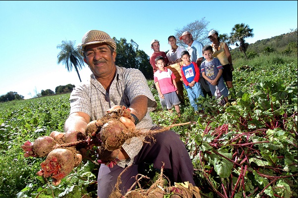

Agricultura é a prática econômica que envolve a cultivação de alimentos, como o plantio de grãos e a produção de frutas. Essa é uma das principais áreas econômicas do Brasil.
A agricultura é uma atividade econômica caracterizada pelo plantio e cultivo de alimentos. A fixação da população nômade contribuiu para a produção alimentar em nível mundial. Atualmente, a atividade agrícola é umas das principais da economia mundial. Os sistemas agrícolas estão divididos em extensivo e intensivo. Esses modelos são subdivididos em diferentes tipos de agricultura, como a permacultura e o agronegócio. O Brasil é um dos principais produtores de alimentos de todo o mundo.
Resumo sobre agricultura
- A agricultura é uma prática econômica que se iniciou especialmente em razão da fixação da população humana devido à necessidade de produção de alimentos.
- O termo agricultura remete ao conjunto de atividades da parte primária da economia que se baseia na cultivação de plantas.
- Os diferentes tipos de agricultura estão associados aos modelos extensivo e intensivo de produção agrícola.
- A agricultura é uma atividade de grande importância econômica e estratégica, especialmente no fornecimento de alimentos.
- O Brasil é um grande produtor mundial de bens primários, como soja, café, laranja, milho, algodão e cana-de-açúcar.
- O termo agropecuária designa o conjunto de atividades primárias que reúnem o cultivo de alimentos e a criação de animais.
A agricultura iniciou-se especialmente em razão da fixação da população humana. A partir do fim do nomadismo, o ser humano sentiu a necessidade de cultivar seus próprios alimentos de forma fixa, ou seja, ao contrário do processo de coleta que ocorria nas sociedades nômades. Assim, a partir da fixação humana, houve o crescimento da agricultura.
Essa prática se desenvolveu ao longo da história por meio de processos como a urbanização e a industrialização, que aumentou a necessidade de acesso aos alimentos e às matérias-primas. Nesse contexto, destaca-se a Revolução Verde, processo de modernização das atividades agropecuárias que culminou na mecanização do campo e no aumento da produtividade.
A agricultura é, atualmente, um importante componente das atividades primárias da economia, com destaque para países subdesenvolvidos e emergentes. O crescimento da mecanização do solo, da biotecnologia e do investimento de capitais aumentou progressivamente a capacidade de plantio e colheita de alimentos, mas resultou em impactos ambientais significativos
Conforme as características das práticas agropecuárias, a agricultura é dividida em dois grandes sistemas, sendo eles o extensivo e o intensivo. As características desses sistemas agrícolas estão expostas a seguir.
A agricultura extensiva é caracterizada pela adoção de técnicas tradicionais de cultivo.Esse modelo está fortemente vinculado à agricultura familiar, de baixa escala, baseada na policultura e praticada em médias e pequenas propriedades. A agricultura extensiva utiliza menos ferramentas tecnológicas, emprega menos mão de obra e consome menores investimentos em capital. Por sua vez, os impactos ambientais gerados por esse modelo agrícola são diminutos.


O uso de mão de obra braçal e familiar é uma característica do modelo extensivo de produção.
A agricultura intensiva é caracterizada pelo uso de modernas práticas agrícolas, com emprego de tecnologia de ponta, insumos e agroquímicos diversos, máquinas e equipamentos, e elevado investimento de capitais. Esse modelo gera maior produtividade das lavouras, emprega mão de obra muito qualificada e resulta na intensa mecanização do campo. Porém, causa inúmeros impactos ambientais resultantes da alteração da paisagem natural e do uso intensivo da terra.
A mecanização do solo e da lavoura é uma característica do modelo intensivo de produção.
Quais são os tipos de agricultura?
Os tipos de agricultura estão comumente associados aos dois grandes sistemas agrícolas: o modelo extensivo e o modelo intensivo.
Agricultura familiar

A agricultura familiar é caracterizada pelo emprego de mão de obra familiar, em pequenas propriedades, com baixo investimento de capital e foco na policultura de alimentos. Esse é um dos tipos de agricultura vinculada ao sistema extensivo de produção.
Agricultura orgânica
A agricultura orgânica é aquela que é praticada sem o uso de aditivos químicos como os chamados agrotóxicos. Esse tipo de prática agrícola está baseado na ideia de responsabilidade ambiental, logo provoca menos alterações antrópicas no meio natural e ainda valoriza técnicas tradicionais de produção. O uso racional das fontes de água, o emprego de adubos orgânicos, como restos de folhas, e a prática da rotação de culturas são típicos da agricultura orgânica. Esse também é um tipo de agricultura vinculada ao sistema extensivo de produção.
Permacultura
A permacultura é uma prática agrícola bastante ampla, que utiliza inclusive preceitos filosóficos na sua implementação. Esse tipo de agricultura é caracterizado pela adoção de métodos sustentáveis de cultivo e também pela manutenção do equilíbrio ecológico e ambiental das áreas agrícolas. A permacultura é praticada tanto em áreas rurais quanto urbanas, por meio de hortas, e busca a integração entre a cadeia produtiva, o meio ambiente e a sociedade. Esse também é um tipo de agricultura vinculada ao sistema extensivo de produção.
Agrofloresta
A agrofloresta é um tipo de prática agrícola que busca a manutenção da vegetação nativa local. Nesse sentido, os alimentos são cultivados em conjunto com outras plantas e árvores nativas, formando um sistema de compartilhamento entre espécies nas áreas naturais. A agrofloresta propicia a manutenção da cobertura do solo pela matéria orgânica, a preservação de espécies de árvores nativas e a conservação das condições naturais locais do solo, da água e do ar. Esse também é um tipo de agricultura vinculada ao sistema extensivo de produção.
A agrofloresta busca a integração entre a produção alimentar e a preservação ambiental.
Agricultura comercial

A agricultura comercial é caracterizada pelo intenso uso de tecnologias no campo, pela mecanização das lavouras, pelo uso de agroquímicos, pelo emprego em mão de obra qualificada e pelo elevado investimento em capitais. Esse é um dos tipos de agricultura associada ao modelo agrícola intensivo.
Agricultura Moderna
Razão da agricultura moderna é um tipo de agricultura que se tornou predominante a partir da chamada Revolução Verde, ocorrida desde o século passado, que possibilitou a transformação do meio rural em o da modernização das atividades agropecuárias. A prática moderna da agricultura utiliza muitas máquinas, equipamentos, insumos e requer um grande investimento em capital financeiro e mão de obra qualificada. Esse também é um dos tipos de agricultura associada ao modelo agrícola intensivo.
A agricultura moderna é um tipo de agricultura que se tornou predominante a partir da chamada Revolução Verde, ocorrida desde o século passado, que possibilitou a transformação do meio rural em razão da modernização das atividades agropecuárias. A prática moderna da agricultura utiliza muitas máquinas, equipamentos, insumos e requer um grande investimento em capital financeiro e mão de obra qualificada. Esse também é um dos tipos de agricultura associada ao modelo agrícola intensivo.
Agronegócio
O agronegócio é um tipo de prática agrícola muito próximo da agricultura moderna. O termo agronegócio remete às atividades agropecuárias que são realizadas com grande investimento em capital. Nesse modelo, que utiliza amplas áreas de terra, há intensa mecanização do solo, amplo uso de adubos químicos e elevado nível de produtividade. O agronegócio é voltado para o abastecimento da cadeia mundial de matérias-primas e alimentos, especialmente por meio da exportação. Esse também é um dos tipos de agricultura associada ao modelo agrícola intensivo.
Monocultura
A monocultura é um tipo bastante usual de agricultura ancorado na cultivação de uma única espécie de planta. Essa prática agrícola está comumente associada a grandes propriedades de terra. A monocultura utiliza diversas ferramentas tecnológicas de produção agrícola e busca maximizar a produtividade por hectare. Porém, ela implica inúmeros impactos ambientais na paisagem natural, como a remoção da vegetação nativa e a perda da biodiversidade local. Esse também é um dos tipos de agricultura associada ao modelo agrícola intensivo.
A monocultura de soja é muito praticada no Brasil.
Qual a importância da agricultura?
A agricultura é uma atividade de grande importância alimentícia, estratégica e econômica. A produção de alimentos é de suma importância, tanto para o suprimento das sociedades quanto para o fornecimento de matérias-primas. Os países grandes produtores de alimentos têm um papel de destaque na cadeia mundial de suprimentos, sendo importantes atores em termos geopolíticos. Esse cenário é ainda mais descartável em um contexto de mudanças climáticas e de recorrentes crises alimentares.
Atualmente, a agricultura é um dos setores mais estratégicos da economia, visto que é fundamental para o desenvolvimento econômico e social. O setor propicia um grande volume de empregos e impostos, contribuindo para o crescimento da economia mundial. Ademais, ele também contempla diversas inovações tecnológicas, desde a área de máquinas e equipamentos até a de biotecnologia, que são significativas para o aumento da produção alimentar.
Agricultura no Brasil
O Brasil é um dos principais produtores agrícolas do mundo.A agricultura no país iniciou-se em larga escala a partir do processo de colonização do país, por meio de grandes ciclos econômicos, como o da cana-de-açúcar e o do café. Com a modernização do país houve uma intensa transformação do espaço rural, marcada pela introdução de novas técnicas de cultivo e pela utilização de máquinas e equipamentos. Ademais, a urbanização e a industrialização brasileira fomentaram a necessidade do aumento da produtividade no campo brasileiro.
A partir de então, o Brasil destacou-se como um dos principais produtores de alimentos e matérias-primas do planeta. A agricultura brasileira na atualidade é caracterizada pela ampliação da produtividade, pelo elevado nível de emprego, pelo avanço da mecanização do solo e pelo grande uso de tecnologias de ponta. Mesmo assim, o país ainda possui diversos problemas no campo, como a elevada concentração fundiária, a forte desigualdade social e o registro de inúmeros problemas ambientais. O Brasil é um grande produtor mundial de bens primários, como soja, café, laranja, milho, algodão e cana-de-açúcar.
Agropecuária
O termo agropecuária designa o conjunto de atividades primárias que reúne o cultivo de alimentos e a criação de animais. Assim, a agropecuária é um termo amplo que remete tanto à agricultura quanto à pecuária, que são duas atividades fundamentais especialmente para o fornecimento de alimentos para a sociedade. Para saber mais sobre a agropecuária.
Curiosidades sobre a agricultura
O Brasil é o maior produtor de laranjas do mundo, com destaque para o estado de São Paulo, principal polo de produção dessa fruta no país.
A maior parte dos empregos gerados pela agricultura está concentrada no tipo familiar de prática agropecuária.
O Brasil é o maior exportador de soja de todo o mundo, com destaque para embarques para os países asiáticos, como a China.
Os maiores produtores de alimentos em nível mundial são os países Estados Unidos, China, Brasil e Índia.
O Brasil é um dos maiores produtores de frutas do mundo, com destaque para a exportação de uvas e mangas.